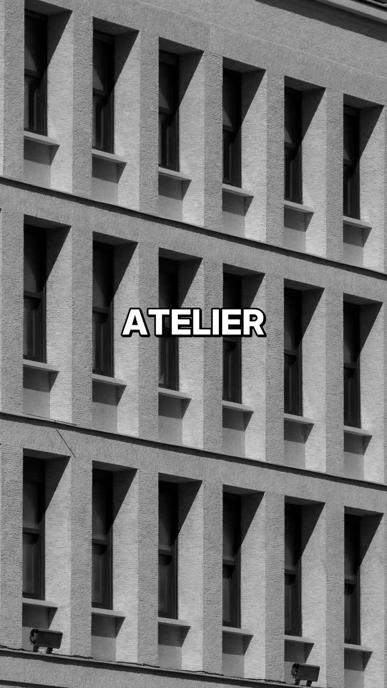

F-Motion
Turn stills and clips into motion for studio and Fotium reels.
View on GitHub
Open Studio Soon
How it works
-
1. Import.
Bring in stills, clips, or a partner feed.
-
2. Compose.
Order beats, timing, and look in the studio.
-
3. Render.
Export a reel ready for Fotium or your own host.
Product
F-Motion is the motion layer next to Fotium. Studio UI, partner import, reel engine. Self-host when you want the pipeline on your own stack.
Demo
